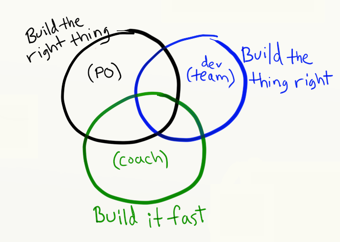
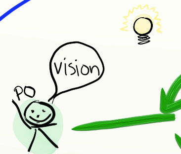
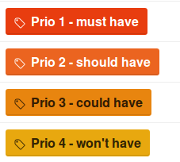
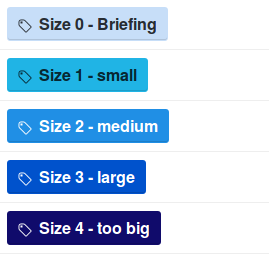
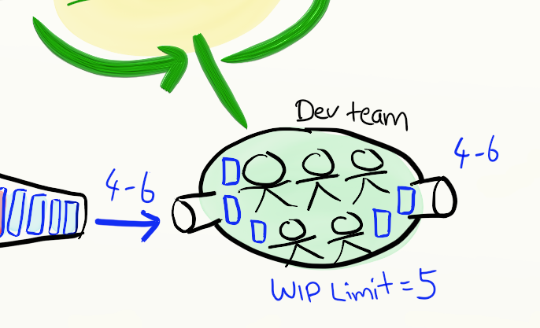

Agile Task Management
Or "how to eat an elephant"
Created by Sofus Albertsen
Inspired by Henrik Kniberg
Layout
- 45 min section
- twofold:
- Part 1: History and theory of task management
- Part 2: How we do it
Part 1
History and theory
Task management
The question all management theory tries to answer is:
The elephant
All projects are elephants
In order to eat one, you need to cut it up to smaller chunks
Go at it. Piece by piece.
Work breakdown
Epics, Use cases, User stories, tasks, requirements definition
Different approaches to the same thing
Old days

Agile manifesto
Early and continuous delivery of valuable software
Healthy and efficient environment
Working software is the primary measure of progress
What is wrong with the old ways?
User feedback loop
| Waterfall | Agile | |
| At release | All the time! |
We are making software, not bridges!
Photo by Trainiac
Agile planning
PO has a vision
High level description of a concrete problem, issue or feature.
Can be called Epic, SoW, Briefing
What is it that the user wants right now?
Can change a lot, embrace change :)
Briefing
Essentially, it describes a possible delivery and covers the following:
- Goal statement
- Suggested solution
- Deliverables
Example
Online flight reservation system
Goal statement
A website where people can search for and book flights from different airlines in real time.
Features:
Search for flights both one way and two way
Indication of rising or falling prices in neighbouring days
Search for multi-stop trips
etc
Product backlog
All the wishes from the PO and his team
Made as user stories
User Story
As a (role), I want (feature) so that (benefit)
We still haven't made something!
Prioritizing and
Minimum viable product
MoSCoW
Must have, Sould have, Could have, Won't have
Set by the product owner
Estimates
Set by the people working on the task
Estimates
| Size/Label | Meaning |
|---|---|
| 0 - briefing | Used to indicate that it’s a discussion or briefing task. No work will be done |
| 1 - small | A task for an hour or two but never more |
| 2 - medium | Can be finished in 2-4 hours. |
| 3 - large | From half to full days work |
| 4 - too large | If it’s more than a full days work, then it’s too big. |
Milestones
Timeboxed delivery
Given these resources, and this deadline what volume can I expect?
What if we do not make it on time?
In CD every single commit is a potential release candidate
You can always deliver something!
Special milestones
Backlog
Runway
Status
| Label | Meaning |
|---|---|
| duplicate | Case is being closed, as the issue is covered in a duplicate case. |
| in progress | The person assigned to the task is currently working on it - and nothing else! |
| workable | Task is groomed and prepared to a level where it can be worked on. |
| up next | Indicates some urgency on top of the prioritization. |
Status
Waffle boardKanban
Minimize work in progress
Implement feedback loop
Learn and improve continuously
Minimum Viable Product
The praqmatic workflow